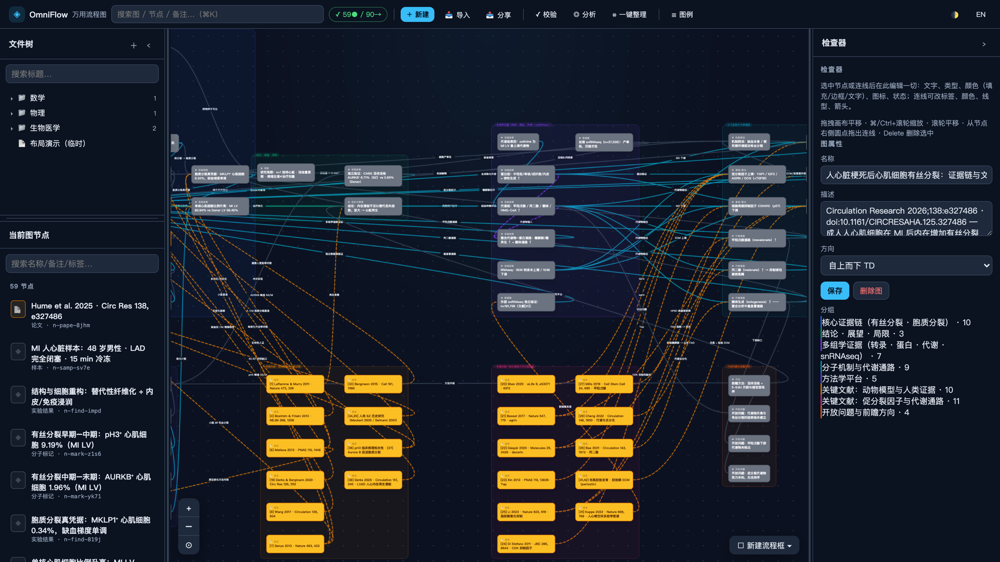
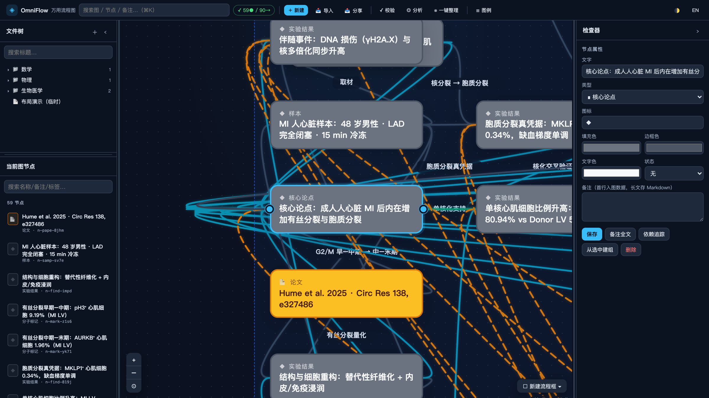
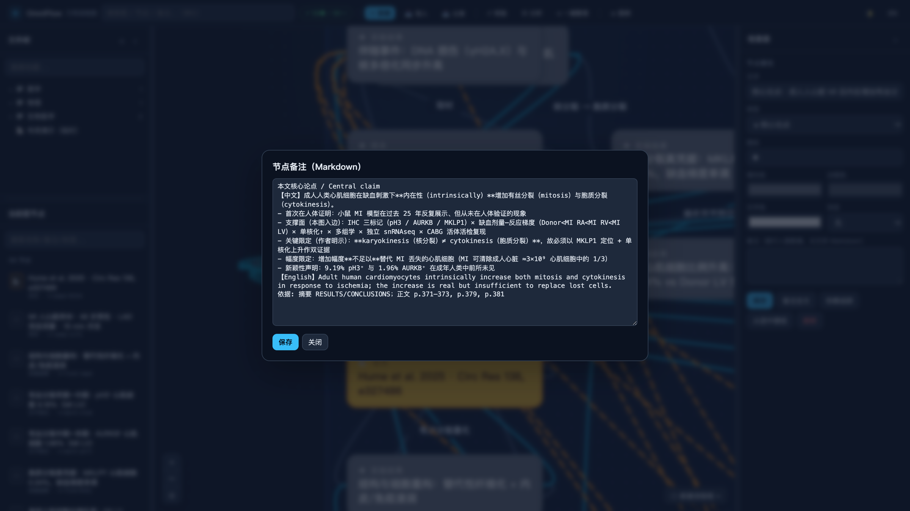
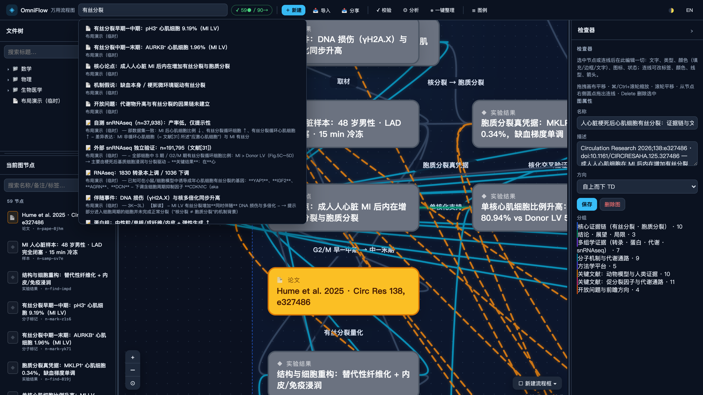
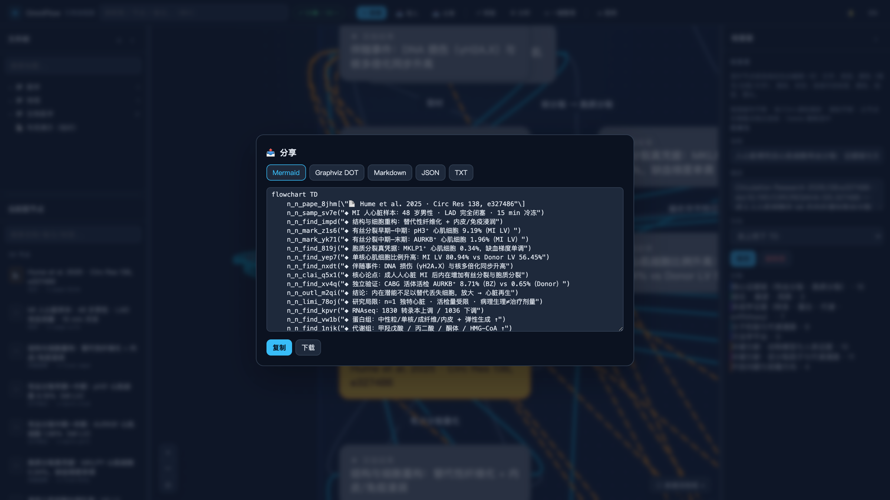
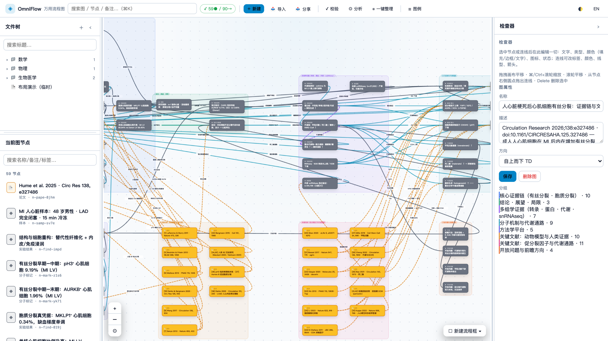

01 / STRUCTURE
从任意关系开始
定理、论文、任务、人员、对话……10 类内建节点与 18 种边语义；自定义类型只是一段 JSON。
定理依赖、论文脉络、任务协作、组织结构、研究对话——把散落的关系，放进同一张可追溯的画布。

少一点孤立的列表，多一点上下文：每个节点都能回到来源、备注与下一步。
定理、论文、任务、人员、对话……10 类内建节点与 18 种边语义；自定义类型只是一段 JSON。
按依赖分层、按分组聚簇，一键整理；全局搜索即时命中并高亮，图例随类型自动生成。
连线可命名、可选色、可换线型与箭头方向——支持、矛盾、依赖、取代，关系自己会说话。
每个节点自带 Markdown 正文：论文留 DOI 与页码，任务写验收标准，画布是索引，备注是全文。
环检测、度中心性瓶颈报告、上下游依赖闭包——找出你 RACI 里的单点故障。
图数据是纯 JSON，可进 Git、可静默 diff；随时导出 Mermaid / DOT / Markdown / TXT。还能一键把 AgentFlow 工作流变成图。
六种内置模板都是完整可改的起点——不是示例截图，是能直接开工的图。
定理 / 引理 / 命题 / 定义分层展开，谁依赖谁、哪里有环，一眼看穿。
论文节点带 DOI 与本地路径，支持 / 矛盾 / 引用关系连成证据网络。
R 执行 / A 负责 / C 咨询 / I 知会，连线颜色即职责；度中心性揪出单点故障。
部门 / 人员 / 汇报关系成树成图，跨团队协作路径不再靠猜。
课题、成员、交付物与依赖关系挂在同一张图上，进度与瓶颈同屏。
讨论串 follows / answers / merges 成图，长线程的结论与分叉一目了然。
介绍片与真实操作录屏，都来自同一个正在运行的 OmniFlow Studio。
以下截图均取自真实图数据，可直接对照上方录屏。





人用画布，脚本用 CLI，AI 智能体走 MCP——读写的是同一个 graph.json。
61 个工具：建图、改图、布局、搜索、读写备注，即插即用。
of mcpSTDIO · JSON-RPC可视化 Studio 与 REST API，事件流实时同步，仅监听 127.0.0.1。
of studio --port 4319REST + SSE · LOCAL-ONLY批量建图、模板、导入导出，一行命令进 CI 或笔记工作流。
of create "证据链" --template research --lang zhZERO-DEPENDENCY NODE.JS无需注册、无需联网账号——数据始终在你的机器上。
ZCode / Claude Code / Codex / Cursor / Windsurf——任何能跑 shell 的 Agent 都装得动。
install.sh / install.ps1：装 CLI、挂技能、链接 of 命令，重跑即升级。
of studio 打开 127.0.0.1:4319；of --version 与 of doctor 随时自检。
把这句话发给你的 Agent：「克隆并安装 https://github.com/kanghelyu/omni-flow，然后运行 of studio。」
前往仓库 ↗